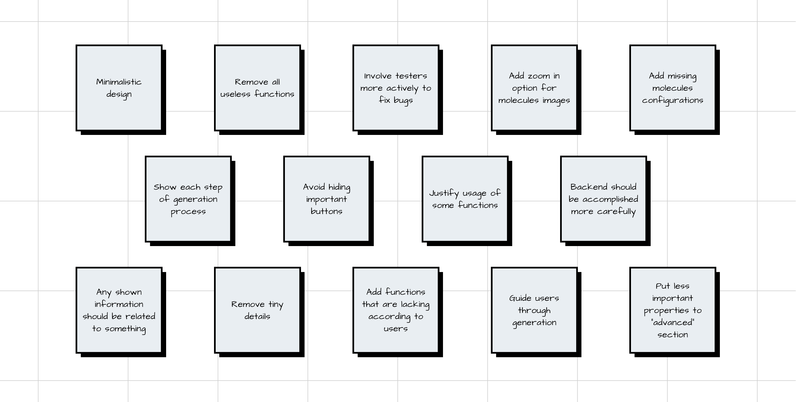

"I need to generate an experiment from the existing one, but there is no such button." — Alexander M (Principal Scientist).
Ideation 💡
how might we…?
In an effort to encourage brainstorming and foster a fresh perspective on the project, we attempted to reframe the problem statement using the question format, beginning with "How might we." Drawing insights from our research, we developed a Point-of-View based on a deeper understanding of users, their needs, and critical aspects about them.

solutions
We provided a broad scope to encourage thinking about solutions that go beyond the status quo. The team participated in a brainstorming session to address the proposed question. We solicited ideas from each member about features for the future app, allowing everyone to vote for the most viable ones.
